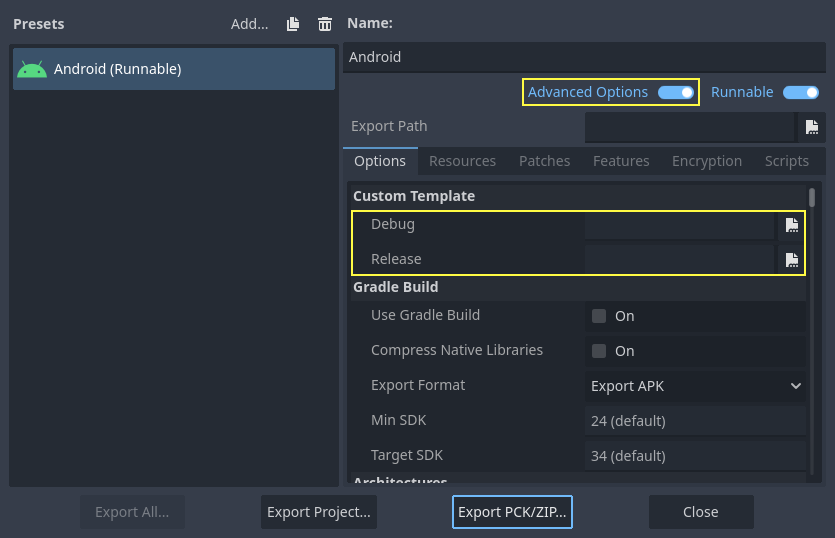

Compiling for Android
See also
This page describes how to compile Android export template binaries from source. If you're looking to export your project to Android instead, read Exporting for Android.
Note
In most cases, using the built-in deployer and export templates is good enough. Compiling the Android APK manually is mostly useful for custom builds or custom packages for the deployer.
Also, you still need to follow the steps mentioned in the Exporting for Android tutorial before attempting to build a custom export template.
Requirements
For compiling under Windows, Linux or macOS, the following is required:
SCons 4.4+ build system.
Android SDK
To install the Android SDK, follow the steps here.
On Linux, do not use an Android SDK provided by your distribution's repositories as it will often be outdated.
On macOS, do not use an Android SDK provided by Homebrew as it will not be installed in a unified location.
Gradle (will be downloaded and installed automatically if missing).
JDK 17 (either OpenJDK or Oracle JDK).
You can download a build from Adoptium.
See also
To get the Godot source code for compiling, see Getting the source.
For a general overview of SCons usage for Godot, see Introduction to the buildsystem.
Setting up the buildsystem
Set the environment variable
ANDROID_HOMEto point to the Android SDK. If you downloaded the Android command-line tools, this would be the folder where you extracted the contents of the ZIP archive.Windows: Press Windows + R, type "control system", then click on Advanced system settings in the left pane, then click on Environment variables on the window that appears.
Linux or macOS: Add the text
export ANDROID_HOME="/path/to/android-sdk"to your.bashrcor.zshrcwhere/path/to/android-sdkpoints to the root of the SDK directories.
After setting up the SDK and environment variables, be sure to restart your terminal to apply the changes. If you are using an IDE with an integrated terminal, you need to restart the IDE.
Run
scons platform=android. If this fails, go back and check the steps. If you completed the setup correctly, the NDK will begin downloading. If you are trying to compile GDExtension, you need to first compile the engine to download the NDK, then you can compile GDExtension.
Building the export templates
Godot needs three export templates for Android: the optimized "release"
template (android_release.apk), the debug template (android_debug.apk),
and the Gradle build template (android_source.zip).
As Google requires all APKs to include ARMv8 (64-bit) libraries since August 2019,
the commands below build templates containing both ARMv7 and ARMv8 libraries.
Compiling the standard export templates is done by calling SCons from the Godot root directory with the following arguments:
Release template (used when exporting with Debugging Enabled unchecked)
scons platform=android target=template_release arch=arm32
scons platform=android target=template_release arch=arm64 generate_android_binaries=yes
Debug template (used when exporting with Debugging Enabled checked)
scons platform=android target=template_debug arch=arm32
scons platform=android target=template_debug arch=arm64 generate_android_binaries=yes
The resulting templates will be located under the bin directory:
bin/android_release.apkfor the release templatebin/android_debug.apkfor the debug templatebin/android_source.zipfor the Gradle build template
Note
If you are changing the list of architectures you're building, remember to add
generate_android_binaries=yesto the last architecture you're building, so that the template files are generated after the build.To enable dev build (for use when troubleshooting) in the generated templates, add the
dev_build=yesparameters to the SCons command.To include debug symbols in the generated templates, add the
debug_symbols=yesparameters to the SCons command.Note that you can include
separate_debug_symbols=yesto generate the debug symbols in a separate*-native-debug-symbols.zipfile.
See also
If you want to enable Vulkan validation layers, see Vulkan validation layers on Android.
Adding support for x86 devices
If you also want to include support for x86 and x86_64 devices, run the SCons
command a third and fourth time with the arch=x86_32, and
arch=x86_64 arguments before building the APK with Gradle. For
example, for the release template:
scons platform=android target=template_release arch=arm32
scons platform=android target=template_release arch=arm64
scons platform=android target=template_release arch=x86_32
scons platform=android target=template_release arch=x86_64 generate_android_binaries=yes
This will create template binaries that works on all platforms. The final binary size of exported projects will depend on the platforms you choose to support when exporting; in other words, unused platforms will be removed from the binary.
Cleaning the generated export templates
You can use the following commands to remove the generated export templates:
cd platform/android/java
# On Windows
.\gradlew clean
# On Linux and macOS
./gradlew clean
Using the export templates
Godot needs release and debug binaries that were compiled against the same version/commit as the editor. If you are using official binaries for the editor, make sure to install the matching export templates, or build your own from the same version.
When exporting your game, Godot uses the templates as a base, and updates their content as needed.
Installing the templates
The newly-compiled templates (android_debug.apk
, android_release.apk, and android_source.zip) must be copied to Godot's templates folder
with their respective names. The templates folder can be located in:
Windows:
%APPDATA%\Godot\export_templates\<version>\Linux:
$HOME/.local/share/godot/export_templates/<version>/macOS:
$HOME/Library/Application Support/Godot/export_templates/<version>/
<version> is of the form major.minor[.patch].status using values from
version.py in your Godot source repository (e.g. 4.1.3.stable or 4.2.dev).
You also need to write this same version string to a version.txt file located
next to your export templates.
However, if you are writing your custom modules or custom C++ code, you might instead want to configure your template binaries as custom export templates in the project export menu. You must have Advanced Options enabled to set this.

You don't even need to copy them, you can just reference the resulting
file in the bin\ directory of your Godot source folder, so that the
next time you build you will automatically have the custom templates
referenced.
Building the Godot editor
Compiling the editor is done by calling SCons from the Godot root directory with the following arguments:
scons platform=android arch=arm32 production=yes target=editor
scons platform=android arch=arm64 production=yes target=editor
scons platform=android arch=x86_32 production=yes target=editor
scons platform=android arch=x86_64 production=yes target=editor generate_android_binaries=yes
You can add the
dev_build=yesparameter to generate a dev build of the Godot editor.You can add the
debug_symbols=yesparameters to include the debug symbols in the generated build.Note that you can include
separate_debug_symbols=yesto the last architecture you're building, to generate the debug symbols in a separate*-native-debug-symbols.zipfile.
You can skip certain architectures depending on your target device to speed up compilation.
Remember to add generate_android_binaries=yes to the last architecture you're building, so that binaries are generated after the build.
The resulting binaries will be located under bin/android_editor_builds/.
Removing the Editor binaries
You can use the following commands to remove the generated editor binaries:
cd platform/android/java
# On Windows
.\gradlew clean
# On Linux and macOS
./gradlew clean
Installing the Godot editor APK
With an Android device with Developer Options enabled, connect the Android device to your computer via its charging cable to a USB/USB-C port. Open up a Terminal/Command Prompt and run the following commands from the root directory with the following arguments:
adb install ./bin/android_editor_builds/android_editor-android-debug.apk
Troubleshooting
Platform doesn't appear in SCons
Double-check that you've set the ANDROID_HOME
environment variable. This is required for the platform to appear in SCons'
list of detected platforms.
See Setting up the buildsystem
for more information.
Application not installed
Android might complain the application is not correctly installed. If so:
Check that the debug keystore is properly generated.
Check that the jarsigner executable is from JDK 8.
If it still fails, open a command line and run logcat:
adb logcat
Then check the output while the application is installed; the error message should be presented there. Seek assistance if you can't figure it out.
Application exits immediately
If the application runs but exits immediately, this might be due to one of the following reasons:
Make sure to use export templates that match your editor version; if you use a new Godot version, you have to update the templates too.
libgodot_android.sois not inlibs/<arch>/where<arch>is the device's architecture.The device's architecture does not match the exported one(s). Make sure your templates were built for that device's architecture, and that the export settings included support for that architecture.
In any case, adb logcat should also show the cause of the error.